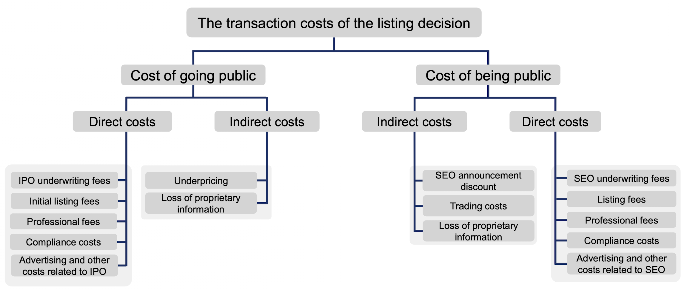
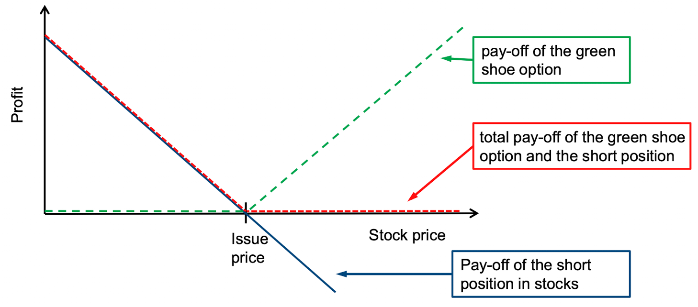
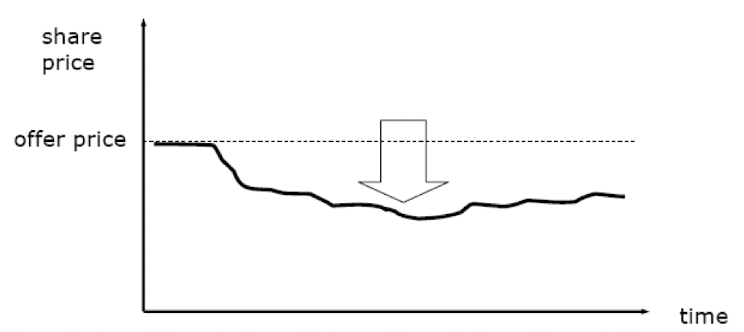
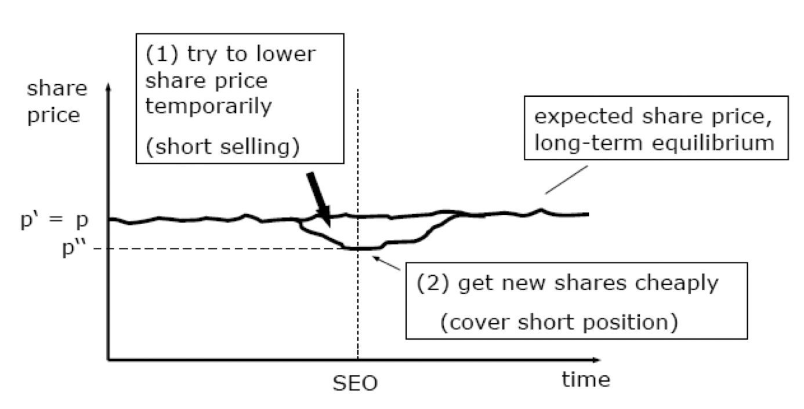

Corporate Finance 1
Chapter 1
Name five requirements for a BaFin license.
For selling shares in a stock-exchange in Germany, a company has to acquire a license from the regulator BaFin. Some requirements for that are: - Initial capital of €50,000 - Business plan and organizational structure - Names of the involved owners, information on reliability and amount of participation - Disclosure on compensation policy and practices - Information about connection between other natural or legal persons
Which involved party suggests the starting price of the share?
The investment bank managing the IPO along with the company going public suggest the starting/offer price.
What correlates with IPO intensity?
- A countries’ education level
- Economic climate/freedom
- Degree of urbanization
- Whether a state has a major financial center
Describe the rend of listings in Germany since 1950. Can a similar trend be observed in the USA?
The number of new IPOs as well as the number of public companies have been broadly declining in Germany since the 1950s. Simultaneously, the number of delisting has increased. The same holds true for the US.
Name and explain two types of special IPOs.
- Carve-out: A parent company sells shares in its subsidiary to the public. One example is Porsche and VW.
- Spin-off: Separate listing of part of an existing listed company. An example is E-On and its spin-off Uniper.
- Direct listing: Company shares become publicly traded without a formal IPO. No new shares are sold. An example is Spotify.
- SPAC: A company-shell is created and raises money in an IPO. It then tries to acquire a private company. An example of a company that went public this way is the producer of electric vehicles Lucid.
Explain the difference between a carve-out and a spin-off. Provide one example for each type.
With both a carve-out and a spin-off, a new independent publicly listed company is created from an existing parent company. However, in a carve-out, new shares of a subsidiary are sold to the public. With a spin-off on the other hand, the shares are distributed to the existing shareholders of the parent company.
What are the different parties involved in an IPO?
The main parties in an IPO include: - Issuing company - Investment banks - Regulators - Investors
Chapter 2
Explain possible advantages and disadvantages of a listing.
Advantages: - Access to new equity - Easier access to future capital through seasoned equity offerings - Cashing out opportunity for current owners - Better image, more press - Employee compensation through stock
Disadvantages: - Profit-sharing - Loss of control - Loss of confidentiality - Strict reporting and publicity requirements - IPO expenses
Costs of an IPO can be divided into “costs of going public” and “costs of being public”. How can these costs be further classified? Give an example of each.

Name one possible advantage for employees coming with an IPO.
There is now the possibility of getting compensation in company stock (which can actually be sold – in contrast to private companies).
Set the formula for the cost of going and being public. Which factors need to be put into consideration?
We pretend as if costs of going and being public occur (stretched out) every year. \[ k_e^c = \underbrace{\frac{1}{1 - \alpha f^{IPO}}}_{\text{Cost of IPO itself}} \underbrace{(k_e + l + \gamma f^{SEO})}_{\text{Costs each year}} \] with \[ \begin{aligned} k_e^c &= \text{Equity cost for firm} \\ k_e &= \text{Investor equity return} \\ \alpha &= \text{IPO-proceeds to market-cap ratio} \\ l &= \text{Annual listing and disclosure cost ratio} \\ \gamma &= \text{Annual SEO-proceeds to market-cap ratio} \\ f^{IPO} &= \text{IPO cost ratio} \\ f^{SEO} &= \text{SEO cost ratio} \\ \end{aligned} \] If we assume some values like 20% IPO proceeds at an 8% IPO fee, 5% investor return, 0.1% yearly listing fee and a yearly SEO with a volume of 10% of the market cap with a 2% fee, we get the following: \[ \begin{aligned} k_e^c &= \frac{1}{1-20\%\cdot8\%} \cdot (5\%+0.1\%+10\%\cdot2\%) \\ &= 1.016 \cdot 0.053\\ &= 5.39\% \end{aligned} \] So the largest factor (with these kinds of values) is the expected return of the investor.
Why should the timing of a financial decision not matter?
According to the Modigliani/Miller theorem and the Efficient Market Hypothesis, issuing new securities via an IPO should not, on average, provide a positive net present value (NPV) opportunity for the company. This is because, in an efficient market, the new shares will be priced fairly based on all available information.
Company management intends an IPO in the medium term. What problems should be solved by an IPO? What effects (advantages/improvements) does the management expect from this step? Explain three possible advantages of a listing for this company from the context. Additionally, when would it make sense to proceed with the IPO, when not? Describe two points in time and give reasons.
- Problems solved: Raise capital for growth or expansion, provide liquidity for early investors to cash out, and increase the public profile of the company.
- Effects: Better access to public capital markets for future financing, use stock as acquisition currency, pay employees with stock.
- Timing: It makes sense to proceed with an IPO when the company has a strong financial track record and growth prospects. It doesn’t make sense when financials are poor or the market is in a downturn.
The management intends a delisting in the medium term. What problems should be solved by a delisting? What effects (advantages/improvements) does the management expect from this step?
- Problems solved: Reduce regulatory burden and costs, protect proprietary information, concentrate ownership and control.
- Effects: Avoid public reporting requirements, maintain confidentiality of proprietary information, managers can focus on long-term goals rather than quarterly results.
Chapter 3
Explain the consequences when going public.
- Diversification & Bargaining Power: Public firm shareholders are better diversified, whereas large private investors have more bargaining power.
- Investor Conviction & Cost: Public companies need to convince a broader investor base, incurring costs reflected in lower share prices.
- Public Share Pricing: IPOs allow observable share pricing, reducing outsider evaluation costs through free-riding opportunities.
- Venture Capital Financing: Reduces information costs but demands higher returns due to less diversification and greater bargaining power, unlike public companies which face duplicated information production costs.
Why do companies experience an extension of the maturity of their debt after going public?
Companies tend to take on debt with longer repayment periods due to improved public information and stronger bargaining positions.
What should unlisted companies consider when deciding to go public?
Issuing new shares will dilute current ownership percentages.
Why do companies in the same industry go public in clusters?
- Reasons external to the firm and external to the stock market:
- More projects need to be funded, based on the broader economy and the business cycle.
- Reduction in IPO costs by changes in the compliance requirements, listing rules or commission fees.
- Reasons external to the firm but internal to the stock market:
- Favorable stock markets (i.e. high valuations) will lead to more IPOs.
- Reasons internal to the firm:
- Entrepreneur needs to obtain external financing to undertake a positive net present value project.
What empirical evidence for IPOs did you learn? Explain three study results.
- Main factor affecting IPO probability is the market-to-book ratio of firms in the same industry.
- Second most important factor is firm size, as larger firms are more likely to go public.
- There is clustering in IPO activity over time.
- Companies experience a reduction in the cost of bank loans after an IPO.
- Founders do not bring their company public mainly for diversifying.
Chapter 4
What is meant by “underpricing”?
There are large returns on the first day of trading of equity IPOs. The underpricing can thus be calculated as \[ R = \frac{P(t_1)}{P(t_0)}-1 \] where \(R\) is the first day return, \(P(t_1)\) is the closing price of the first trading day and \(P(t_0)\) is the offering price. One could also include a market correction by subtracting the market return of the day. This however is seldom used, because market returns tend to be small compared to the IPO return.
Explain the theoretical models that try to explain the phenomenon of underpricing. When is underpricing high, and when is it low?
There is asymmetric information between all parties of an IPO (issuer, investor, underwriter). This results in the following hypothesis: - Winner’s curse: Uninformed/average investors who win bids might overpay, because informed investors will only bid on underpriced shares, leading uninformed investors to win the “bad” IPO bids. That’s why uninformed investors bid lower from the beginning. - Market feedback hypothesis: The underwriter needs market feedback for pricing an IPO. However, investors would not give this information “for free”. That’s why underwriters compensate with underpricing. - Signalling hypothesis: Issuers want to “leave a good taste” with investors for futures SEOs. Thats why they accept underpricing.
Explain two advantages and disadvantages that underpricing and overpricing can have.
| Underpricing | Overpricing | |
|---|---|---|
| (+) | - Increased initial demand - Positive market momentum |
- Maximize capital raised - Buffer against market volatility |
| (-) | - Leaving money on the table - Perceived lack of confidence |
- Poor post-IPO performance - Risk of IPO failure |
List three difficulties that are present in connection with pricing in an IPO.
- There is no observable market price prior to offering.
- The issuing firm might be young and have little operating history.
- If price is set too low, issuer leaves money on the table.
- If price is set too high, not all shares get sold and IPO fails.
- Investors would not buy IPOs from underwriter with history over overpricing.
Given the first day return \(R\) and the closing price of the first day \(P(t_1)\), calculate the offer price \(P(t_0)\). Which simplification can mostly be used?
We can mostly ignore the market return of the day, because it tends to be small in comparison to the first day return. \[ \begin{aligned} R &= \frac{P(t_1)}{P(t_0)}-1 \\ \iff P(t_0) &= \frac{P(t_1)}{R-1} \end{aligned} \]
Calculate how much money is left on the table considering: number of shares sold, offer price and closing price.
With the number of shares \(N\), offer price \(P(t_0)\) and closing price \(P(t_1)\), we can find the money left on the table \(M\). \[ \begin{aligned} M &= \text{actual proceeds} - \text{could-have proceeds}\\ &= N \cdot P(t_1) - N \cdot P(t_0) \\ &= N \cdot \left( P(t_1) - P(t_0) \right) \end{aligned} \]
Explain the winner’s curse hypothesis and give an example on how it occurs.
We assume there are two types of investors: Informed ones who know a stock’s true value and uninformed ones who don’t know that. Informed investors only buy an underpriced IPO. So, uninformed investors only win their full bid in overpriced IPOs.
Example: Good IPOG (+20% initial return)and bad IPOB (-5% initial return), both offer 1500 shares. The informed investor bids for 500 shares in IPOG and 0 shares in IPOB. The uninformed investor bids for 1500 shares in both IPOs. IPOG is over-subscribed and both investors receive \(\frac{1500}{2000}=75\%\) of their bid. In IPOB, the uninformed investor receives their full bid. Now the expected return for the informed investor is 20% while for the uninformed investor it is \[ E(r) = \frac{75\% \cdot 20\% + 100\% \cdot -5\%}{2}=5\% \] That’s why underwriters create underpricing: To keep all investors happy and the IPO market alive.
What is the Market Feedback Hypothesis? Example: true price \(x\), investor bids \(y\); What is the underpricing and expected profit?
The idea behind the market feedback hypothesis is, that investors are better informed than the investment bank and needed for pricing the IPO. However, investors are not willing to provide valuable information without compensation. This compensation then comes in the form of underpricing and larger allotments (with the bookbuilding procedure). With the true price \(x\) and the investor bid \(y\), we can calculate the resulting underpricing and expected profit as \(x-y\).
Chapter 5
Present the main steps to the IPO in correct order and briefly explain their importance.
- Decision to go public
- Beauty contest and IPO pitches
- Selection of underwriter(s)
- Definition of the IPO structure
- Preparation of documents & filings, company valuation and analysis
- Roadshow and bookbuilding
- Order taking, price setting
- Allotment
- Price support
Where are the shares drawn from when a young or old company goes public?
Young companies typically sell primary shares. These are shares that are newly created. The proceeds go to the company and may be used for expansion, for example. Older companies usually sell mostly secondary shares, which come from existing shareholders. In this case, no new cash comes to the company. Usually, there is a mixture of primary and secondary shares sold at an IPO.
What empirical evidence for IPOs did you learn in the lecture?
- Higher underwriter reputation leads to higher underpricing. This effect reduces when there has been a relationship between underwriter and issuer before the IPO.
- Social ties between underwriter and issuer (for example management is friends with bankers) impacts the outcome of an IPO.
- Venture capital backing reduces underpricing.
How does venture capital influence underpricing and why?
IPOs with venture capital backing tend to have a lower underpricing. This may be due to smaller information asymmetries and a positive of the venture capital backing.
Does the underwriter play a role in underpricing? Explain.
Evidence suggests, that higher underwriter reputation leads to higher underpricing. This might be a kind of additional fee for better analyst coverage.
Chapter 6
Explain the steps of the (decoupled) bookbuilding procedure.
Classical Bookbuilding procedure: 1. Analyst meeeting 2. Pre-marketing phase including publishing of the price range 3. Marketing and order-taking phase 4. Publishing of the final offer price and allotting shares Decoupled Bookbuilding procedure: 1. Analyst meeting 2. Pre-marketing phase 3. Marketing phase 4. Publishing the price range 5. Order taking phase 6. Publishing final offer price and allotting shares
Name the three price-building procedures. Give two advantages and disadvantages per procedure.
| Price-Building Procedure | Advantages | Disadvantages |
|---|---|---|
| Fixed Price Offering | - Simplicity: Easy for investors to understand. - Accessibility: Small investors can participate. |
- Mispricing Risks: Might not reflect market demand. - Limited Capital Maximization: Might not obtain maximal possible capital if demand is higher. |
| Book Building | - Market-Driven Pricing: Adjusts price based on investor demand. - Information Gathering: Provides market feedback on price and demand. |
- Complexity: More complicated and harder for smaller investors to understand. - Bias Towards Institutional Investors: Larger investors might have greater influence. |
| Dutch Auction | - Fair Market Price Discovery: All bids determine the final price. - Democratization: Equal playing field for all investor types. |
- Uncertainty: Final price not known until completion. - Complex Understanding: Some investors find the process challenging. |
Name and explain the most important allocation methods and describe their advantages and disadvantages.
| Allocation Method | Description | Advantages | Disadvantages |
|---|---|---|---|
| Fixed Price | An offer price is set prior to requests for shares being submitted. | - Simple and transparent process. | - Cannot adjust price based on demand. - Often leads to high underpricing if demand is strong. - Difficult to allocate shares efficiently. |
| Auctions | Investors bid for shares, and a clearing price is determined. | - May result in less underpricing. - Allows price discovery. |
- Complicated for investors. Difficult for issuers to control allocation. - Provides little incentive for information production. |
| Bookbuilding | Investors provide non-binding indications of demand. Offer price set based on demand. Underwriters allocate shares. | - Allows price discovery, - incentivizes information production, - discretion in allocation. |
- Lack of transparency, potential conflicts of interest. |
What factors drive the allocation decision in the bookbuilding process
With the bookbuilding process, the investment bank can allocate shares at their own discretion. To really make it possible to choose which investors to allocate shares, the demand must be larger than the supply, usually by a factor of three.
The investment bank then chooses the allocation based on the importance of the institution/the investor, participation in the roadshow, transparency of purchase intentions, deal and price feedback, price aggressiveness. Also, the investment bank looks to limit stock flowback, by preferring long-term investors like pension funds. At the same time, a certain trading volume after the IPO is wanted, so some allocation also goes to active trading investors. Retail investors typically get an allocation as well.
What method was mostly used before the bookbuilding and what problems occurred?
Before the bookbuilding process become popular, fixed price offerings were the defacto standard. There were some problems however: - Limited Market Feedback: With the fixed price IPO, the price is set by the issuer and investment bank without any price discovery by the market. - Mispricing Risk: Because the price is set by the issuer, it may be significantly over- or underpriced. - No check on investor sentiment: Without price bids, it’s hard to gauge investor sentiment or market conditions
Explain the allocation variations in the fixed price process.
If demand is larger than supply, shares are allocated pro rata or randomly. However, requests for large numbers of shares are typically cut back more.
There are two types of bookbuilding in allocating shares. What is their name and elaborate the difference by graphing each process.
There are the classical and the decoupled bookbuilding process.
Chapter 8
Name and explain the methods of price stabilization.
- Direct intervention: The underwriter directly buys shares in the open market when the price drops below the offer price, thus pushing up the share price.
- Greenshoe option: The underwriter initially sells more shares than it should, effectively creating a short position. When the share price drops, it can then buy back the shares it over-allocated to push up the price.
Explain how the greenshoe option can contribute to price stabilization after the IPO, depending on the price development.
First, the underwriter sells excess shares, creating a short position. The following then depends on the development of the share price: - Share price drops below offer price: The underwriter can buy back the excess shares and close its short position. This creates demand and pushes up the share price. - Share price stays above offer price: The underwriter does not buy back the excess shares. For this scenario, the issuer provided secondary shares to the underwriter beforehand.
Display the “Pay off structure” of a greenshoe option.
 The most important takeaway: The bank always makes extra profit when the shareprice diverges from the offer price.
- Share price rises: The underwriter does not buy back the excess shares. It effectively created a higher IPO volume and thus makes more in commission fees.
- Share price falls: The underwriter closes its short position and makes money doing so.
What can be seen in the graphic? Explain the effect and provide reasons. 
The graphic shows a drop in the share price after the IPO. This might be due to overpricing or volatility and illiquidity. In this case, the underwriter can choose to stabilize the price either by buying shares directly “onto their book” or by utilizing its greenshoe option.
Chapter 9
Explain three possible disadvantages of a listing
- The cost of going public is very high: Investment banks charge high fees, and the underpricing is a cost as well.
- The cost of being public is high: Publicly traded companies have stricter regulatory and reporting requirements, which can incur additional costs for compliance and financial reporting.
- Loss of control: Going public often requires selling a significant portion of the company’s equity to outside investors.
What is a lock-up period? How long can it last?
Lock-ups are standard arrangements in an IPO. They restrict the sale of shares by pre-issue shareholders for a certain period, often times 6 months. This is done to align the interests of current owners to the owners and a quick “cashing out” on the IPO day.
How are fees in an IPO structured?
- 20% management fee to the lead manager for due diligence, prospectus, pricing, organization of syndicate, road show
- 20% underwriting fee for placement risk and price stabilization
- 60% selling concession for each share sold by a syndicate member
What is the cost of an IPO in relation to its volume in the US and other countries?
In the US, the cost is 7% of the IPO volume on average. In other countries, this is around 3.5%.
What are some findings concerning the lock-up period and its ending? How can it be explained?
- The volume traded on the day the lock-up ends is much higher than on average (+60%) because of early investors selling their shares.
- The trading volume remains elevated after this day (+40%) because more shares are now available for trading.
- On the around the lock-up expiration, there is a significant and permanent drop in price (-2.5%).
- The price drop is anticipated yet still happens, mostly because of trading costs, difficulty of entering short positions because of low float and tax reasons.
Company X is significantly overpriced after three years. How does this fit into the empirical evidence?
IPOs do not have a great long run performance on average when compared to similar companies. So, Company X would be an outlier.
What does empirical evidence indicate for the long-run performance when companies choose an underwriter with less reputation?
Companies that choose less reputable underwriters for the IPO perform poorer in the long run. This might be because these companies tend to be smaller and are less likely to be backed by venture capitalists, thus having worse corporate governance.
The following characteristics of companies increase the likelihood for what? High-reputation of underwriter, larger firm size, higher ROA, high-tech industry company.
These characteristics increase the likelihood of a company being included in an index like the S&P 500.
Chapter 10
Is there clustering, underpricing and underperformance in SEOs? How does it compare to IPOs?
- Yes, clustering / cycles also exist for SEOs. However, they are not as pronounced and shorter as for IPOs.
- Yes, there is underpricing with SEOs, around 2,5%. This is way less then the underpricing found for IPOs. The underpricing tends to higher for the first SEO a company does.
- There is also underperformance after an SEO. In contrast to IPOs though, this underperformance does not vanish when controlling for size. This might be due to the different capital structure of firms that did an SEO and one that did not.
With the help of a diagram, show how to make money with seasoned equity offerings.

- Sell the stock short when an SEO is announced.
- Wait for the stock to drop.
- Cover the short position. It will typically reach its lowest level at the offer day.
What are the consequences of a seasoned equity offering?
There are multiple consequences of an SEO: - Lower leverage: With an SEO, a company raises new equity thus reducing the equity-to-equity ratio or leverage. This makes the company a less risky investment. - Higher liquidity in the stock market: The additional shares lead to more shares circulating in the market and therefore a higher liquidity. - New cash: A company’s management needs a good story what they will do with the new cash they have on hand. Ideally, the cash is used for profitable projects.
How can capital increases be distinguished? What are the differences?
Capital increases can be distinguished by the means of the increase: - Capital increase in return for cash - Capital increase in the return for stock - Capital increase from the company’s reserves
Chapter 11
What is “underperforming” and how do you determine that in IPOs/SEOs?
Underperformance means that a firm which did an IPO/SEO perforce worse than the broad market or a specific subset over a long time period, typically measured between 1 to 5 years. It is typically calculated using the Buy-And-Hold-Abnormal-Return of stock \(i\) up to month \(M\) after an IPO/SEO: \[ BHAR_{i,M} = \left( \prod_{m=1}^{M} (1+r_{i,m}) -1 \right) - \left( \prod_{m=1}^{M} (1+ E[r_{i,m}]) -1 \right) \] The expected return \(E[r_{i,m}]\) of stock \(i\) in month \(m\) can be approximated by the return of the broader market or a subset of matching firms in that month.
What happens when an equity issuer lowers its leverage?
When an issuer raises equity in using a SEO it automatically reduces the leverage. This in turn reduces the risk of default. This reduction in risk will result in a lower risk premium in the stock market.
Why does the risk have to decrease when investments are financed through equity?
If a capital investment is financed by equity, then risk must decrease because investment in effect extinguishes the risky growth options.
By allocating capital to a specific investment, the company is effectively closing the door on some of the other growth options it may have had. Those other options, being uncertain and yet-to-be-realized, carry risk. Committing to a known investment eliminates the uncertainty associated with those unrealized growth options.
What does management do if the share price appears to be too high?
When the stock is overvalued (from the managements perspective), it can choose to sell new shares to profit from this. The opposite would be buying back shares when the stock is undervalued.
Outline investors’ reaction to negative announcements.
After a SEO announcement, the stock price drop around 2.5% in the following two days. This can either be attributed directly to the SEO or it could just mean that new information has entered the market and impacted the stock price.
Name three securities involved in the OTC transactions.
Securities involved in a PIPE deal can be - common stock - preferred stock - convertible preferred stock - convertible debt - other types of equity
Why can’t investors cover their short positions with shares from the PIPE transaction?
Usually, investors hedge their PIPE investment by short-selling. However, the investor cannot cover its short positions with the actual shares received in the PIPE transaction. Shares to cover short-sales must have been sold when the short-sale was made.
Present the main benefits for an issuer when using PIPEs
PIPE (Private Investment in Public Equity) are a means of selling shares to an investor over the counter. The main benefits to a “normal” SEO are - It’s quicker than a SEO - Small issues/transactions are possible, that would not be worth it with a SEO - Short-term stock market reactions are positive - Flexibility: Various contract terms can be agreed on - The shares can be sold either at a discount or a markup